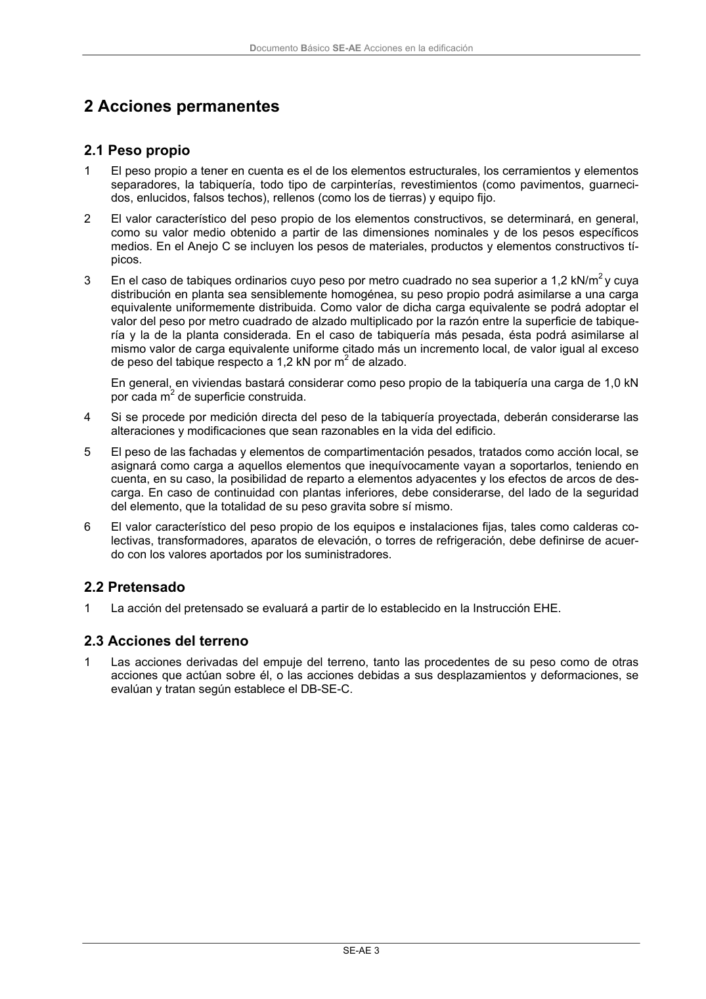

DB-SE-AE Acciones en la edificación · edición 2009-04 · capa oficial
Documento DB-SE-AE-oficial · SHA-256 del PDF 26116e5088955f0c6963a6187270cad282e1e7bf5a53a90f695c8fa50b4e4487
Página física 7 de 46.
Copia fiel del PDF fuente · Fuente oficial
Ficha de la disposición en la fuente oficial
Formato: Texto de la página (Markdown)
Documento Básico SE-AE Acciones en la edificación SE-AE 3 2 Acciones permanentes 2.1 Peso propio 1 El peso propio a tener en cuenta es el de los elementos estructurales, los cerramientos y elementos separadores, la tabiquería, todo tipo de carpinterías, revestimientos (como pavimentos, guarneci- dos, enlucidos, falsos techos), rellenos (como los de tierras) y equipo fijo. 2 El valor característico del peso propio de los elementos constructivos, se determinará, en general, como su valor medio obtenido a partir de las dimensiones nominales y de los pesos específicos medios. En el Anejo C se incluyen los pesos de materiales, productos y elementos constructivos tí- picos. 3 En el caso de tabiques ordinarios cuyo peso por metro cuadrado no sea superior a 1,2 kN/m2 y cuya distribución en planta sea sensiblemente homogénea, su peso propio podrá asimilarse a una carga equivalente uniformemente distribuida. Como valor de dicha carga equivalente se podrá adoptar el valor del peso por metro cuadrado de alzado multiplicado por la razón entre la superficie de tabique- ría y la de la planta considerada. En el caso de tabiquería más pesada, ésta podrá asimilarse al mismo valor de carga equivalente uniforme citado más un incremento local, de valor igual al exceso de peso del tabique respecto a 1,2 kN por m2 de alzado. En general, en viviendas bastará considerar como peso propio de la tabiquería una carga de 1,0 kN por cada m2 de superficie construida. 4 Si se procede por medición directa del peso de la tabiquería proyectada, deberán considerarse las alteraciones y modificaciones que sean razonables en la vida del edificio. 5 El peso de las fachadas y elementos de compartimentación pesados, tratados como acción local, se asignará como carga a aquellos elementos que inequívocamente vayan a soportarlos, teniendo en cuenta, en su caso, la posibilidad de reparto a elementos adyacentes y los efectos de arcos de des- carga. En caso de continuidad con plantas inferiores, debe considerarse, del lado de la seguridad del elemento, que la totalidad de su peso gravita sobre sí mismo. 6 El valor característico del peso propio de los equipos e instalaciones fijas, tales como calderas co- lectivas, transformadores, aparatos de elevación, o torres de refrigeración, debe definirse de acuer- do con los valores aportados por los suministradores. 2.2 Pretensado 1 La acción del pretensado se evaluará a partir de lo establecido en la Instrucción EHE. 2.3 Acciones del terreno 1 Las acciones derivadas del empuje del terreno, tanto las procedentes de su peso como de otras acciones que actúan sobre él, o las acciones debidas a sus desplazamientos y deformaciones, se evalúan y tratan según establece el DB-SE-C.
